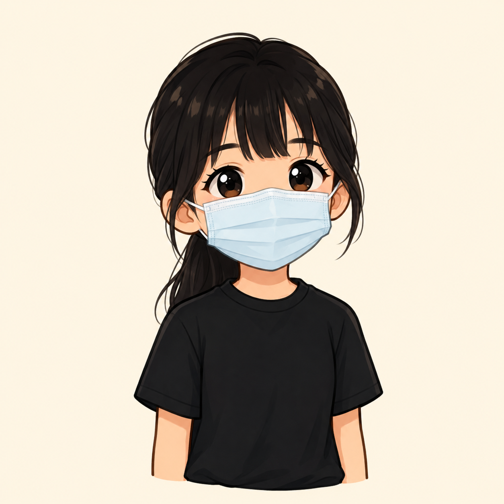
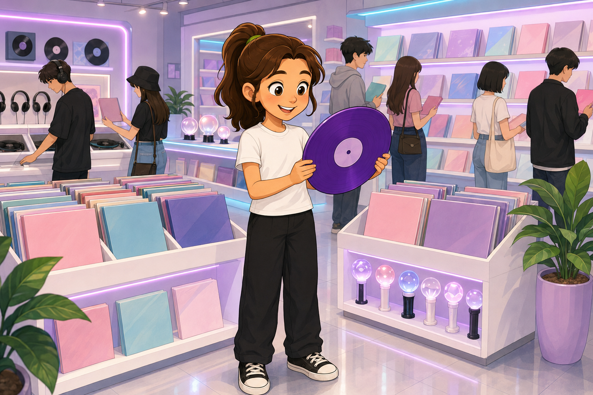
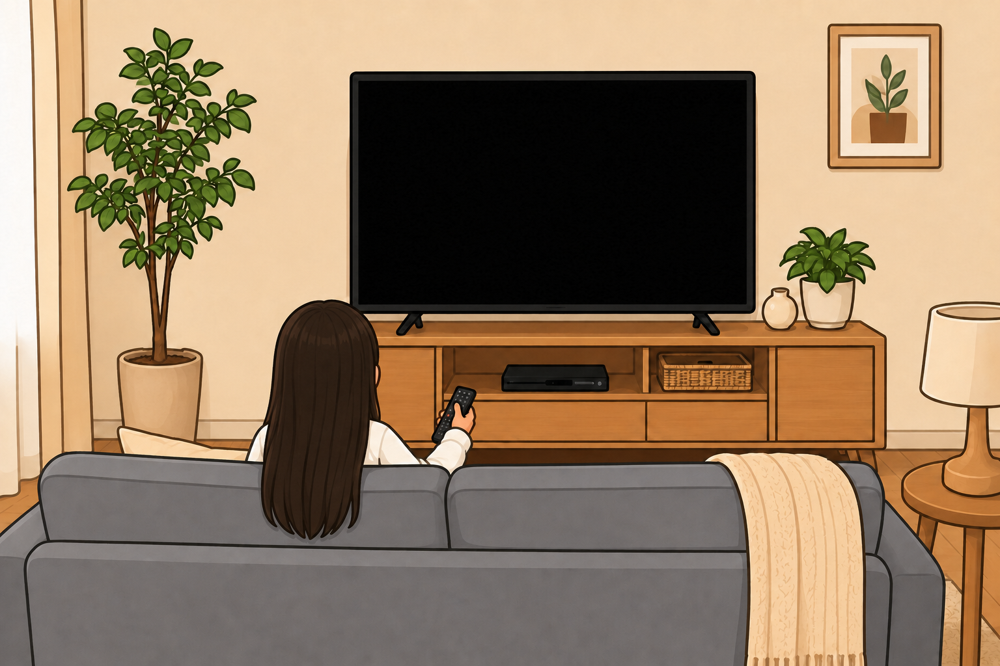
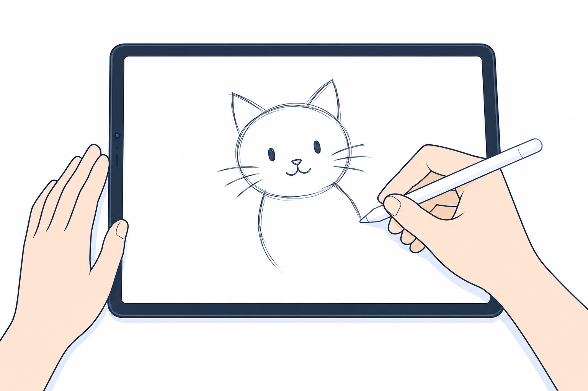
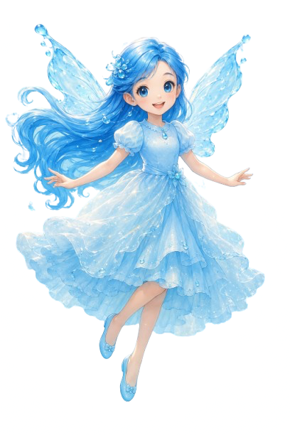

嗨！我是Emilia，今年國小五年級升六年級。我喜歡和朋友一起玩遊戲、聊天也喜歡追星、看動漫。空閒時我常常聽 K-pop 和畫畫，這些興趣都能讓我感到放鬆和開心。我最不喜歡的科目是英文，因為需要背很多文法和單字，對我來說有點困難。不過我希望自己可以慢慢進步，認識更多朋友，期待升上六年級後能留下許多美好的回憶。

我最喜歡個kpop團體是Babymonster 我從2025/9/8開始喜歡他們的 因為他們不但實力強，性格我也很喜歡，我常常後悔沒早點發現這個寶藏女團

我最喜歡的漫畫是葬送的芙莉蓮，而且我最喜歡裡面的費倫，因為費倫不但性格有趣還擁有極高的魔法天賦，這部漫畫最吸引我的地方是劇情很好，這總節奏讓我看得很舒服

是因為我原本上英文課太無聊我看到隔壁同學在畫畫，我就興致上來了，畫完一幅畫畫作後因為上色改搞太麻煩，就變成電繪了，是到至今我興趣不減，希望以後創作共多作品
